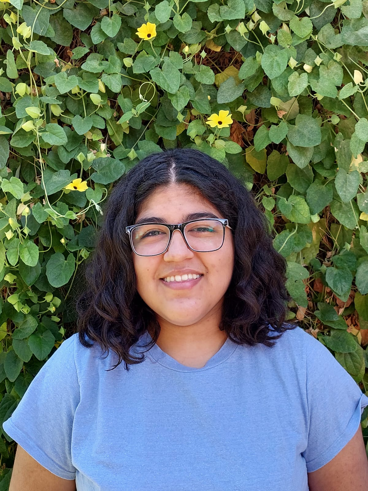

Mora De La Corte
Bienvenido/a a mi web personal
Soy estudiante de Ingeniería Biomédica,
en la Universidad Nacional de San Martín (UNSAM).
Sumando habilidades para ser full stack developer.
Conocimientos adquiridos de modo autodidacta.
en la Universidad Nacional de San Martín (UNSAM).
Conocimientos adquiridos de modo autodidacta.
Actualmente tengo 19 años. Terminé el secundario en el año 2021 obteniendo el título “Bachiller en Ciencias Naturales”. Elegí la carrera de Ingeniería Biomédica para continuar mis estudios, y decidí formar parte de la iniciativa Argentina programa 4.0, con la que obtuve la "Diplomatura en Ciencia de Datos e Inteligencia Artificial".
Taller de inglés a edad temprana, Duolingo y contenido multimedia.
En el año 2023 comencé a aprender Francés a través de la plataforma Duolingo. Planeo inscribirme en clases particulares.
Decidí realizar los cursos online que ofrece la plataforma Freecodecamp. Comencé a introducirme al mundo de la programación mediante los lenguajes de HTML y CSS. Completando así el primer curso: "Responsive Web Design"(300 hs) .
Desde que supe que quería estudiar la carrera Ingeniería Biomédica, busqué formas de relacionarme más con esta. Me inscribí a varias charlas brindadas por la Universidad Austral, en la que participaban estudiantes avanzados e incluso egresados y profesionales. Allí conocí la iniciativa de Austral Biochallenge y decidí formar parte, junto a un grupo de compañeras de la secundaria. El resultado fue el vídeo adjunto y la obtención del primer premio con una mención destacada.